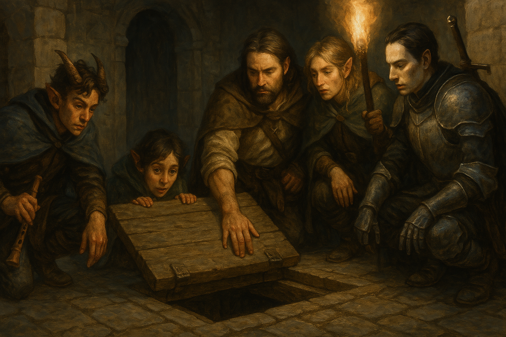

Chapter 1: Underneath the Theatre
Lurking Dangers


Lurking Dangers
15048.12.04
回到馬可斯宅邸後，冒險者們討論，決定先去一趟崔尼斯劇院廢墟的地底。根據小黑屋得到的訊息，那裡似乎是拉索斯教在麥克嵩的據點。馬可斯決定先待在宅邸等待大家，同時也照看著還沒清醒的伊。
踏出馬可斯家門口不久後，冒險者注意到了一個鬼祟的身影，躲在馬可斯家外的牆邊。圖伊特一看，發現這個人是昨晚出現在伊面前的那名魔人，似乎是伊的徒弟。他派出他的夸塞魔，擋住魔人的去路，同時，帕拉丁使出了他的新能力：從他的手指頭噴出蜘蛛絲，要拉倒魔人—他已和將自己精神注入他身體內的安娜達成協議，成為蜘蛛神教的聖騎士。接著冒險者們和魔人嘗試對話。魔人的名字叫羅特，他似乎很擔心伊，但又因為伊告誡他不可以跑來馬可斯家附近，所以才這麼不知所措。話說到一半，馬可斯的家門打開了，馬可斯走了出來，如慈父般的看著羅特，要他不要擔心，他會好好照顧伊，同時也希望冒險者們可以幫忙照顧羅特，他還很年輕，而且身為非人類，在麥克嵩肯定不好過。羅特結結巴巴，但還是對馬可斯心懷感激。
在冒險者們爭論著該如何「照顧」羅特時，羅特趁著馬可斯走回宅邸的那一刻，也潛入了房子。跟著馬可斯走上樓梯，馬可斯頭也沒回，便向羅特表明自己知道他在後面。馬可斯帶著羅特來見伊。伊雖然醒來了，但狀況似乎還是不太穩定。馬可斯和瑪莉安將房間留給師徒兩人，羅特表達了對伊的關心，希望他好好的。一段時間後，羅特聽見了敲門聲。馬可斯將羅特帶了出去，並給他一顆魔法球，表示按住他，就能找到剛剛那群冒險者的位置。
冒險者們發現羅特不見了，心裡倒也輕鬆。他們準備前往崔尼斯劇院的遺址，在路邊發現了一家二手書店。圖伊特決定將之前在伊的秘密基地偷來的宗教書拿去賣，但店小二開的價錢讓他不滿意。帕拉丁試圖透過使用紫羅蘭的勳章發揮點影響力，沒想到店小二抱著圖伊特遞給他的書，一手搶來了帕拉丁的勳章，便往外跑去。圖伊特趕緊追上，並將店小二擊暈。書和勳章從店小二手中飛出，路邊圍觀的群眾搶成一片。圖伊特情急之下，攻擊群眾。除了三名失去意識且不穩定的群眾外，也有好幾名民眾昏去。圖伊特、華生和帕拉丁趕緊前去穩定他們的傷勢。不久後，這些昏迷的民眾紛紛坐起身體，大家對眼前看見的異狀感到疑惑，彷彿這只是一場魔法秀一樣。
倉皇離開尷尬的現場，大家前往崔尼斯劇院的廢墟。這時機警的圖伊特發現身後不遠處似乎有個人正在跟著他們。他一回頭，看見一名提著手提箱的貓人正朝著他們走來。他試圖和貓人溝通，想問清他的來意，貓人和圖伊特兩人之間很緊繃，衝突似乎一觸即發。貓人從手提箱拿出針筒，走向圖伊特。在圖伊特發出攻擊的那一刻，終於趕上，且躲藏在一旁的羅特趕緊跳出解救貓人的性命，並嘗試和圖伊特溝通。羅特表示雙方應該都沒有惡意，不需要馬上互相傷害，圖伊特的情緒才慢慢緩和。但此時貓人已經不見了。
羅特加入冒險者們，在崔尼斯劇院的廢墟尋找出入口。大家從通往地下，免強還能開的門走了進去。走下樓梯，地道內，畫滿記載崔尼斯教歷史的壁畫和文字，但隨著越走越裡面，壁畫消失了，剩下的是有些原始的地道。
冒險者們發現，在前方似乎有個人影，靠在牆邊休息。羅特出於好奇心，趨前探視。他先利用魔法，嘗試在這人形生物耳邊發出些聲音，但那人似乎沒什麼反應，於是羅特便直接走到他旁邊試圖和他說話。
這名靠在牆邊的生物是名地侏女子，是從他的家鄉突然被傳送過來的。他表示自己的名字叫卡拉米普芒果，對於這世界的事情不甚了解。冒險團隊和卡拉米普互相確認沒有惡意後，便決定結伴同行。
華生透過魔法，召喚出了一顆隱形的魔眼，偵查前方。他發現在長廊的盡頭，似乎有個木柵欄，後面有兩隻他認不得的生物。大家在走到那裡時，帕拉丁認出那是他曾遇過的拉茲特獸，但他只記得過去他的夥伴布拉克曾被變成了這樣的生物，以及他的毛皮似乎可以做成隱形斗篷。至於怎麼變的？他也不清楚。
聽到他的毛皮可以拿來使用，蘇加魯便拿出他的武器，嘗試戳弄拉茲特獸的皮膚，但牠的皮膚太厚，完全沒有被戳破的跡象，讓蘇加魯覺得十分有意思。依照帕拉丁的說法，冒險者們判斷拉茲特獸似乎曾經是人型生物變成的，也許將它們放出來是給他們解脫，於是蘇加魯便將木柵欄打開，拉茲特獸極為緩慢的向外走，慢得像是沒有移動一樣。華生也發現拉茲特獸似乎能看見他隱形的魔眼。
卡拉米普覺得拉茲特獸十分有趣，想嘗試將其中一隻抱起來，卻發現牠的重量太重，完全沒有辦法抱起，於是便拿出自己的繩子，將牠環繞著，像是給馬綁上韁繩一般，然後坐到他身上，驅使他前進。不管和他喊話、拿食物在他面前晃，甚至是在他屁股後面點火，拉茲特獸的速度都沒有變快，直到華生施了魔法，才讓拉茲特獸前進的速度能被肉眼辨別，但還是慢到太不合理。
此時，羅特突然發現在長廊的另一端，似乎傳來腳步聲。他趕緊爬到地洞的牆面，從暗中觀察，準備伏擊。蘇加魯、帕拉丁和華生躲在拉茲特獸柵欄旁的拐彎處，而卡拉米普嘗試攀著拉茲特獸的身體，想躲到他的腹面，圖伊特則躲在另一隻拉茲特獸身體的下方。
兩名穿著深色斗篷的人類逐漸靠近，走在前方的人雙手緊抓著鎖鏈，眼神看向躲在牆角的羅特，後方的人類則眼神緊盯著前方。一瞬間，前方的人類將鎖鏈甩向羅特，狠狠地將他拽到地面，一場戰鬥就此展開。
狹窄的地道，蘇加魯衝向斗篷人的正前方，狠狠開打。大家輪番嘗試使出攻擊，但斗篷人似乎比大家想的還要耐打。前方的斗篷人在倒下之前，唸了一串咒語，兩隻拉茲特獸像發了瘋似的，以難以想像的速度向前暴衝，一口氣撞傷了兩、三名冒險者，與先前看到緩慢的不得了的拉茲特獸有著極大的反差。
眼看夥伴倒下，第二名斗篷人在傷了羅特一側的肩膀後，做了個小儀式，便將兩頭拉茲特獸連同自己一起傳送走了。肩關節受傷的羅特和失去潛在寵物的卡拉米普在這場戰鬥後，都感到十分失落。
眾人決定先行休息，然而圖伊特隱約感覺到蘇加魯有點不對勁。他用自己的第三隻眼，發現蘇加魯體內有股力量不斷膨脹，接近不受控制的程度。
心情較為平靜的羅特從背包內拿出要送給夥伴的小雕刻，剛遞給蘇加魯一隻蝙蝠的雕刻時，他便看見蘇加魯臉上的冷汗直冒，然後一陣強光，蘇加魯突然消失了。大家在腦中似乎聽見了蘇加魯留下了「遺言」：「神王」。
神王是誰？還是什麼？現場只有帕拉丁曾經聽過。他簡單和大家說明了過去冒險時，他的夥伴嗚兮噢尼以及他們曾加冕過那隻哥布林神王尼可的故事。
休息過後，大家繼續往前走。不遠處，華生叫出的老鼠，被一隻從旁邊冒出的鬼手抓去。大家彷彿還聽見老鼠被捏碎的聲音。大家小心翼翼地向前走，並找尋機會攻擊那隻手。羅特利用幻象，再造出了一隻假的老鼠，吸引那隻手的注意。鬼手似乎上當了，圖伊特趕緊攻擊，那隻手快速收回門內，消失了。
門內的空間似乎是個集會所，而大家在地道看見燒過的痕跡，似乎是從這裡開始燒起的。集會所現在只剩下被燒過的木櫃。大家翻了一下木櫃，找了每個人一件袍子。這和他們看見先前那兩位拉索斯教徒穿的似乎是同樣的款式。同時，經過調查，這裡似乎曾舉行過簡單的儀式，很有可能是拉索斯教的入教儀式。
離開集會所後，走了好一段，大家發現地道的天花板上似乎有個縫隙。推了一下，上方似乎是個門板，大家一個接著一個爬了上去，那是戶已經好一段時間沒人住的民宅。房間內，一張大床中間似乎凹陷了下去，直通地底，但不是他們上來的這一段。大家在民宅內探索，找到了些衣服，以及一組鼓組，上面有個署名：布拉克。大家決定把這組鼓，同時也是這個家裡唯一可能值錢的東西帶走。
來到文創區，大家找了間樂器行，決定將布拉克的鼓賣了。老闆認識布拉克，但他並不知道布拉克去了哪裡，只能請大家下次見到布拉克時，幫他打個招呼。布拉克的鼓組似乎可以賣些價錢，在圖伊特的感應下，他找到了幾個具有魔法的樂器。最終，圖伊特買了一個有魔法的陶笛，羅特則買了一隻笛子，看起來十分特別，有種妖精的味道。除了兩個樂器外，布拉克的鼓組還能再換一點錢。
圖伊特也去了稍早去的那間書店，將他從伊那裡偷走的書賣給了老闆。
15048.12.04
After returning to the Marcus mansion, the adventurers discussed and decided to go underground first to the ruins of the Trinis Theater. According to the information obtained from the small black room, it seems to be the stronghold of the Rathos Cult in Macksohn. Marcus decided to stay at the mansion to wait for everyone, while also taking care of Yi, who was still awake.
Shortly after stepping out of Marcus' house, the adventurer noticed a sneaky figure hiding by the wall outside Marcus' house. Tweeter took a look and found that this person was the demon who appeared in front of Yi last night, and seemed to be Yi's apprentice. He sent out his Quasai Demon to block the Demon Man's way, while Paladin used his new ability: spraying spider silk from his fingers to bring down the Demon Man - he had made an agreement with Anna who injected his spirit into his body, and became a paladin of the Spider Cult. Then the adventurers and the demon tried to talk. The devil's name is Lott. He seems to be very worried about Yi, but because Yi warned him not to come near Marcus' house, he is so at a loss. Halfway through the words, the door of Marcus' home opened, and Marcus came out, looking at Lott like a loving father, asking him not to worry, he would take good care of Yi, and also hoped that the adventurers could help take care of Lott. He was still very young, and as a non-human being, he would definitely have a hard time in Macksohn. Lott stammered, but was grateful for Marcus.
While the adventurers were debating how to "take care" of Lott, Lott took advantage of Marcus walking back to the mansion and sneaked into the house. Following Marcus up the stairs, Marcus showed Lott that he knew he was behind without looking back. Marcus brings Lott to meet Yi. Although Yi woke up, his condition still seemed unstable. Marcus and Marianne left the room to the master and apprentice. Lott expressed concern for Yi and hoped that he would be well. After some time, Lott heard a knock on the door. Marcus took Lott out and gave him a magic ball, saying that if he held him down, he would be able to find the location of the group of adventurers just now.
The adventurers felt relieved when they discovered that Lott was missing. As they prepare to head to the ruins of the Trinis Theater, they discover a second-hand bookstore on the side of the road. Tweeter decided to sell the religious books he had stolen from Yi's secret base, but he was not satisfied with the price offered by the waiter. Paladin tried to exert some influence by using Violet's medal. Unexpectedly, the waiter grabbed the book handed to him by Tweeter, grabbed Paladin's medal, and ran out. Tweeter quickly caught up and knocked out the waiter. Books and medals flew out of the store's second-hand store, and the onlookers on the roadside rushed to grab them. Tweeter In desperation, he attacks the crowd. In addition to the three unconscious and unstable people, several people also fainted. Tweeter, Watson and Paladin rushed to stabilize their injuries. Soon after, these unconscious people sat up one after another. Everyone was puzzled by the strange things they saw in front of them, as if it was just a magic show.
Hurrying away from the embarrassing scene, everyone headed to the ruins of the Trinis Theater. At this time, the alert Tweeter found that someone seemed to be following them not far behind. He turned around and saw a cat man carrying a suitcase walking towards them. He tried to communicate with the cat man and wanted to know his purpose. The cat man and Tweeter were very tense, and the conflict seemed to be about to break out. Catman took the syringe out of the suitcase and walked over to Tweeter. At the moment when Tweeter launched the attack, Lott, who finally caught up and was hiding aside, jumped out to save the catman's life and tried to communicate with Tweeter. Lott said that there should be no ill intentions on both sides and there was no need to hurt each other immediately, and Tweeter's mood gradually eased. But by this time the cat man had disappeared.
Lott Join the adventurers as they search for an entrance to the ruins of the Trinis Theater. Everyone walked in through the door that led to the underground and could be opened without force. Walking down the stairs, the tunnel was filled with murals and texts recording the history of Trinis Cult. However, as we walked deeper and deeper inside, the murals disappeared, leaving only a somewhat primitive tunnel.
The adventurers discovered that there seemed to be a figure in front of them, resting against the wall. Lott came to visit out of curiosity. He first used magic to try to make some sounds in the humanoid creature's ears, but the man seemed to have no reaction, so Lott walked directly next to him and tried to talk to him.
The creature leaning against the wall is a dwarf woman who was suddenly teleported from his hometown. He said his name was Caramip Mango and he didn't know much about things in this world. After the adventuring party and Caramip confirmed that they meant no harm to each other, they decided to go together.
Watson used magic to summon an invisible magic eye to detect the front. He found that there seemed to be a wooden fence at the end of the corridor, and behind it were two creatures he didn't recognize. As everyone walked there, Paladin recognized it as the Razite beast he had encountered before, but he only remembered that his partner Brock had been transformed into such a creature in the past, and that his fur seemed to be able to be made into an invisibility cloak. As for how it changed? He doesn't know either.
Hearing that his fur could be used, Sugalu took out his weapon and tried to poke the Razite beast's skin, but its skin was too thick and there was no sign of being poked, which Sugalu found very interesting. According to Paladin, the adventurers judged that the Razit beasts seemed to have been transformed into humanoid creatures. Perhaps releasing them was to relieve them, so Sugalu opened the wooden fence, and the Razit beasts walked out extremely slowly, as slowly as if they were not moving. Watson also discovered that Razitmon seemed to be able to see his invisible magic eyes.
Caramip found the Razite beasts very interesting, and wanted to try to pick one up, but found that it was too heavy to be picked up, so he took out his own rope, wrapped it around it, like tying the reins to a horse, and then sat on him, driving him forward. Regardless of shouting to him, shaking food in front of him, or even lighting a fire behind his butt, Razitmon's speed did not speed up. It was not until Watson cast magic that Razitmon's forward speed could be discerned with the naked eye, but it was still too slow and unreasonable.
At this time, Lott suddenly discovered that there seemed to be footsteps coming from the other end of the corridor. He quickly climbed to the wall of the cave, observed from the dark, and prepared for an ambush. Sugalu, Paladin and Watson were hiding in the corner next to the Razitmon's fence, while Caramip tried to climb on Razitmon's body, trying to hide on his belly, while Tweeter was hiding under the body of another Razitmon.
Two humans in dark cloaks gradually approached. The one in front was holding the chain tightly with both hands and looking at Lott who was hiding in the corner, while the humans behind were staring straight ahead. In an instant, the human in front threw the chain towards Lott and dragged him to the ground, and a battle began.
In the narrow tunnel, Sugalu rushed directly in front of The Hooded Figure and started fighting fiercely. Everyone took turns trying to attack, but The Hooded Figure seemed to be more durable than everyone thought. The Hooded Figure in front recited a series of spells before falling down. The two Razit beasts rushed forward at an unimaginable speed like crazy, injuring two or three adventurers in one breath. This was in great contrast to the incredibly slow Razit beasts seen earlier.
Seeing his partner fall, the second player The Hooded Figure, after injuring Lott's shoulder, performed a small ritual and teleported away the two Razite beasts along with himself. Lott, who suffered a shoulder injury, and Caramip, who lost his potential pet, both felt very lost after the battle.
Everyone decided to rest first, but Tweeter vaguely felt that something was wrong with Sugalu. He used his third eye and discovered that there was a force in Sugalu's body that was constantly expanding, almost to the point of being uncontrollable.
Lott, who was in a calmer mood, took out the small carving that he wanted to give to his friend from his backpack. As soon as he handed Sugalu the carving of a bat, he saw cold sweat breaking out on Sugalu's face, and then with a burst of bright light, Sugalu suddenly disappeared. Everyone seemed to hear Sugalu leaving his "last words" in their minds: "God King".
Who is the God King? Or what? Only Paladin in the scene has ever heard it. He briefly told everyone the story of his partner Usioni during their past adventures and the goblin King Knicol they had crowned.
After the break, everyone continued to move forward. Not far away, the mouse called by Watson was caught by a ghostly hand emerging from the side. Everyone seemed to hear the sound of the mouse being crushed. Everyone moved forward cautiously, looking for opportunities to attack the hand. Lott used illusion to create a fake mouse to attract the hand's attention. The ghost hand seemed to be fooled, Tweeter quickly attacked, and the hand quickly retracted into the door and disappeared.
The space inside the door seems to be a meeting place, and everyone saw traces of burning in the tunnel, which seems to have started from here. All that remains of the assembly hall are the burnt wooden cabinets. Everyone looked through the wooden cabinet and found a robe for each person. This seemed to be the same style as what they saw the two Lassosians wearing earlier. At the same time, after investigation, it seemed that a simple ceremony had been held here, which was most likely an initiation ceremony for the Rathos religion.
After leaving the assembly hall and walking for a long time, everyone found that there seemed to be a gap in the ceiling of the tunnel. After pushing it, there seemed to be a door panel above. Everyone climbed up one after another. It was a private house that had been unoccupied for a long time. In the room, a large bed seemed to be sunken in the middle, leading directly to the ground, but it was not the section they came up from. Everyone explored the house and found some clothes and a drum set with a signature: Brock. Everyone decided to take away this set of drums, which was also the only thing that might be valuable in the house.
When we arrived at the Cultural and Creative District, we found a musical instrument store and decided to sell the Brock drum. The boss knows Brock, but he doesn’t know where Brock has gone. He can only ask everyone to say hello to Brock next time he sees him. Brock's drum set seems to be able to sell for a certain price. Under Tweeter's induction, he found several magical instruments. In the end, Tweeter bought a magical ocarina, and Lott bought a flute that looked very special and smelled like a fairy. In addition to the two instruments, Brock's drum set is available for a little more money.
Tweeter also went to the bookstore he went to earlier and sold the book he stole from Yi to the boss.